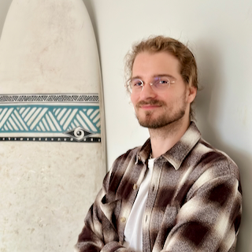

**about lukas galke**
[home](./index.md.html)

- I am the kind of person that is motivated by challenges.
- I practice Yoga.
- I like to go surfing and stand-up paddling.
- I like reading. Currently reading: *Fourth Wing* by Rebecca Yarros. Current book recommendations: *The Light Pirate* by Lily Brooks-Dalton, *Station 11* by Emily St. John Mandel.
- I like to play chess.
- I like [drone] photography.
- I play Saxophone since childhood, but only at Christmas these days.
- I am learning to play Ukulele (on hold).
- I have an inner voice -- [not everyone has one](https://www.technologynetworks.com/neuroscience/news/how-do-you-think-take-the-survey-338421).
(#) some photos


(#) about this website
Whenever I need to look up something about myself, I look here first. If I
don't find it, I add it. I use this website as a playground
for web technology and design (so expect relatively frequent changes).
This version of this website uses [MarkDeep](https://casual-effects.com/markdeep/).